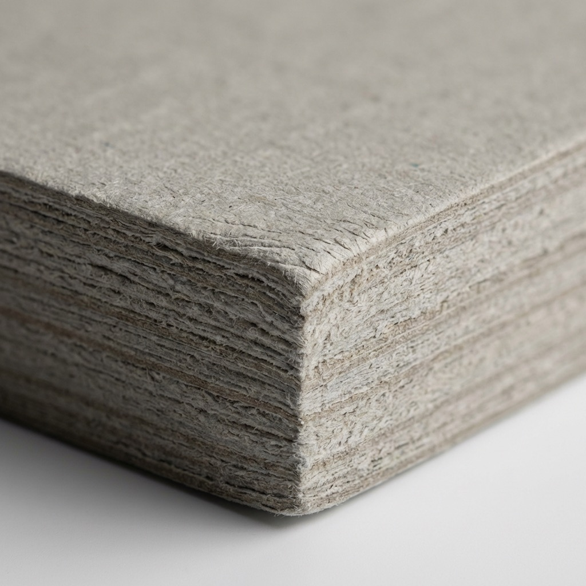
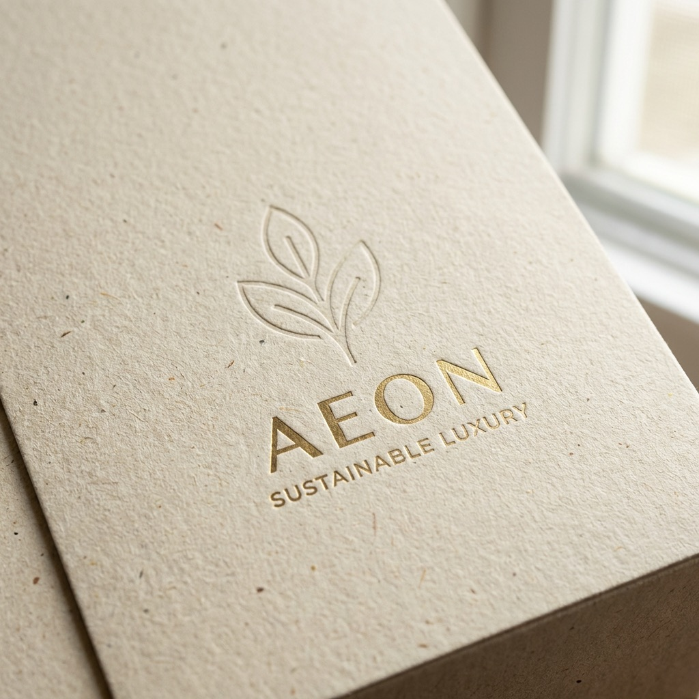
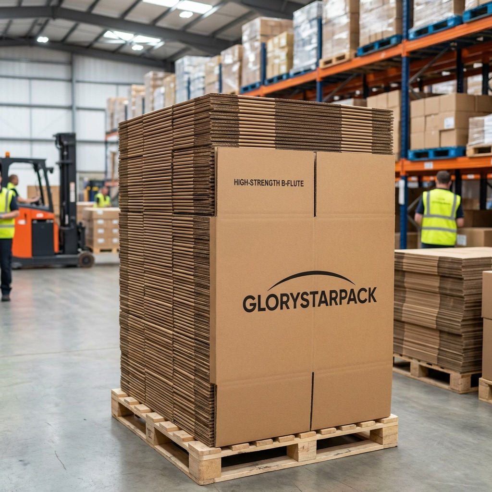

PB–01
PB–01Uncoated and tactile papers
Useful when a natural hand feel or muted print character leads the design. Fold cracking, rub, foil coverage, and dark solid areas should be checked on the selected stock.
- Natural feel
- Foil option
- Material proof

Branded retail packaging
Plan the paper, gusset, reinforcement, handles, print, finish, and packed shipping around what the bag must carry and how the complete packaging set should look.
Paper routes
Surface, fiber, weight, coating, ink coverage, folds, reinforcement, and handle attachment work together. A heavier sheet is not automatically the strongest or most appropriate option.
PB–01Useful when a natural hand feel or muted print character leads the design. Fold cracking, rub, foil coverage, and dark solid areas should be checked on the selected stock.

PB–02A route for smooth graphics, controlled sheen, or a substrate color that becomes part of the design. White ink, opacity, edge color, and lamination can change the result.

PB–03Recycled-content, kraft-look, and other fiber-led papers can be explored against print, strength, finish, sourcing, and end-of-life requirements. Document the exact requested claim before selection.
Structural specification
The usable volume and carrying performance depend on the width, height, gusset, paper, folds, bottom, reinforcement, handle, and how the product sits inside.
| Decision | Information to provide | What to verify |
|---|---|---|
| Product load | Product dimensions, packed weight, quantity per bag, orientation, sharp edges, and any inner box or tissue. | Fit, center of gravity, bottom support, side stress, handle load, and clearance for loading. |
| Bag size + gusset | Finished width, height, side gusset or bottom gusset, top turnover, and intended opening. | Usable internal volume, fold direction, product insertion, silhouette, and stability when carried or placed down. |
| Paper | Paper type, weight, color, coating, texture, recycled-content request if relevant, and print coverage. | Fold performance, stiffness, ink holdout, scuffing, lamination behavior, and consistency with the approved sample. |
| Top construction | Folded top depth, raw or turned edge, inserted reinforcement board, and hole or slot position. | Tear resistance around attachments, fold alignment, edge appearance, and interference with the packed product. |
| Bottom construction | Bottom fold style, adhesive area, optional base board, board thickness, and whether the board is loose or fixed. | Bottom opening, adhesive bond, load distribution, board fit, and bag stability. |
| Handles | Ribbon, cotton cord, twisted paper, flat paper, die-cut grip, length, color, attachment, and knot or end treatment. | Hand clearance, paired length, attachment security, edge abrasion, twist, fraying, and appearance after packing. |
| Print + finish | Artwork, color references, ink coverage, foil, emboss or deboss, varnish, lamination, and finish boundaries. | Color, small details, foil coverage, finish register, cracking at folds, scuffing, and glue compatibility. |
| Approval sample | Representative product, artwork version, material reference, and agreed test or inspection method. | Loaded fit, carrying behavior, appearance, dimensions, construction, and packing method before bulk approval. |
A desk test with loose weights may not reproduce the shape, pressure points, loading method, or carrying behavior of the real product. Use a representative packed item when approving the construction.

Box and bag color coordination
Identical ink values can look different on a coated box wrap, uncoated bag paper, colored stock, ribbon, or foil. Surface gloss, absorption, opacity, texture, and viewing angle all influence the perceived match.
A coordinated packaging set does not always require a visually identical color. An intentional tonal relationship can be more repeatable when the bag and box use very different surfaces.
Packed shipping specification
Paper bags are usually shipped flat, but handle type, surface finish, size, and stacking pressure determine how they should be folded, separated, protected, and counted. Carton data also affects freight planning and warehouse handling.

Paper bag quality control
Acceptance criteria should refer to the signed artwork, dieline, material, approved sample, construction notes, packing standard, and agreed inspection method—not memory or a screen image.
Check the paper, reinforcement, base board, handles, color references, foil, and other specified components before conversion.
Verify width, height, gusset, folds, top and bottom construction, adhesive placement, hole position, and handle pairing.
Review artwork version, color, solid coverage, fine copy, foil or emboss register, surface marks, fold cracking, and rub risk.
Use the agreed load check, then verify bag counts, folding, handle protection, carton marks, carton dimensions, and gross weight.
Buyer questions
Final material, construction, packing, and production recommendations depend on the actual product, artwork, quantity, and delivery requirements.
Quote custom paper bags
Send the finished size, product dimensions and weight, quantity, paper and handle direction, artwork, finish, destination, and packed-carton needs. We will use those inputs to identify the next construction and approval questions.